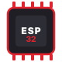

Hi, I’m Justine Jomoc, a 4th-year BSIT student at St. Dominic College of Asia.
Throughout my college years, I’ve worked on various academic and practical tech projects with my classmates. Most of my work centers around technical documentation—handling project requirements, writing reports, and keeping our milestones and project timelines organized.
I enjoy working in team environments where I can help keep things structured, learn new things along the way, and contribute wherever needed. Right now, I’m looking for an on-the-job training (OJT) opportunity where I can gain hands-on industry experience, learn from professionals, and be a reliable member of the team.
You may contact me:
Capstone · Course Projects · IoT
ALERTO — IoT Capstone Project
An emergency alert and telemetry monitoring system built using microcontrollers and smart sensors for rapid risk detection and tracking.
My Role: Project Manager & Documentation for Papers
Key Contributions:
• Managed project timelines, milestone tracking, and task coordination.
• Authored Chapters 1–3 and complete System Requirement Specifications (SRS).
• Created system flowcharts, circuit architecture diagrams, and scheduling charts.
• Supported microcontroller sensor wiring and bench testing with ESP32, sensors, and GPS modules.
Ligtas Sundo — Student Safety & Pickup System
A smart student dismissal and pickup monitoring solution developed to streamline campus safety, notification alerts, and secure student-guardian verification.
My Role: Project Manager & Documentation for Papers
Key Contributions:
• Oversaw overall project management, sprint goals, and team deliverables.
• Led the technical documentation, system specifications, and user workflow mapping.
• Designed system process flowcharts and hardware-software interfacing architectures.
• Supported testing and validation to ensure reliable communication and device performance.
Certifications · Course Completions
Certificates earned from academic coursework, seminars, and training programs. Click any item to view the full document.
Technical Skills · Hardware · Tools
Here’s the breakdown of the hardware, tools, and platforms I work with across my projects and coursework:
Category 01
Hardware & IoT Engineering
Microcontrollers, wireless protocols, and sensors used in our projects for data capture and communication.

ESP32
Microcontroller
ESP-NOW
Wireless Protocol
BLE
Bluetooth Low Energy
MPU6050
Accel / Gyro Sensor
NEO-M8N
GPS Module
LDR
Light Sensor
Reed Switch
Magnetic Sensor
Category 02
Version Control, DevOps & Collaboration Tools
Platforms used for version tracking, code synchronization, and project documentation spreadsheets.
GitHub
Repo & Integration
Google Workspace
Docs & Sheets Tracking
Achievements · Competitions · Honors
Academic honors and student competitions at St. Dominic College of Asia. Click any item to view the certificate.
Leadership · Organizations · Community
Student leadership roles and civic programs at St. Dominic College of Asia. Click any item to view the certificate.